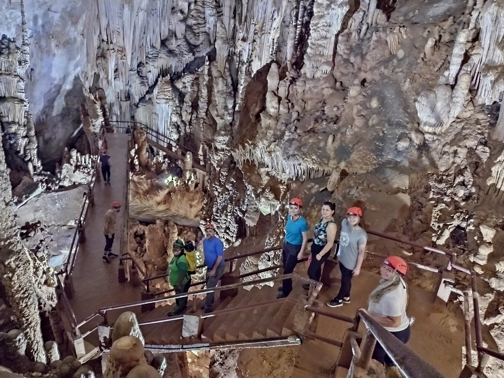
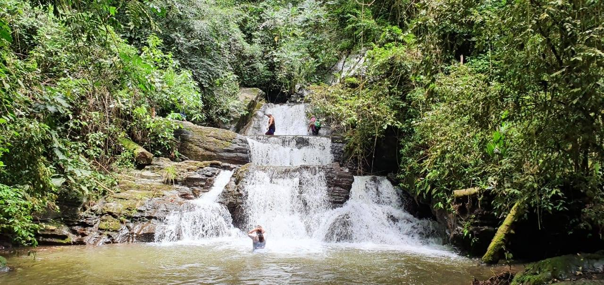
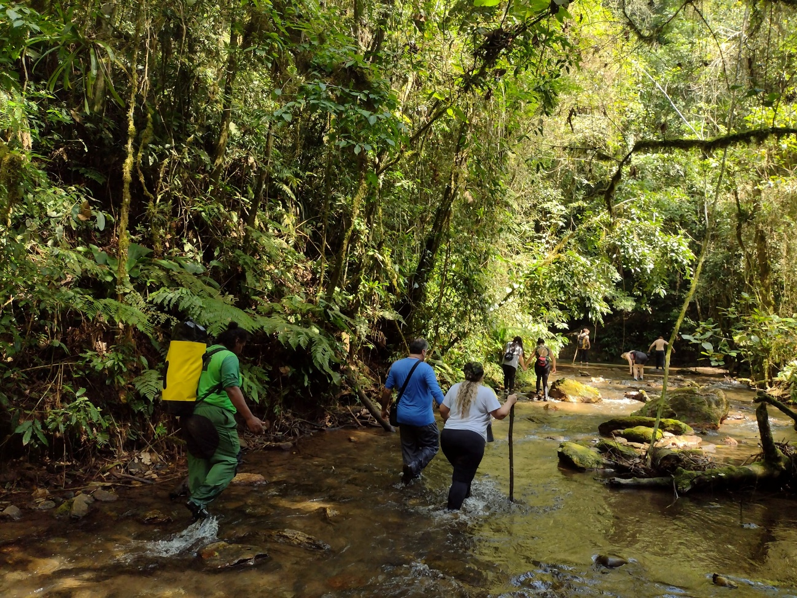
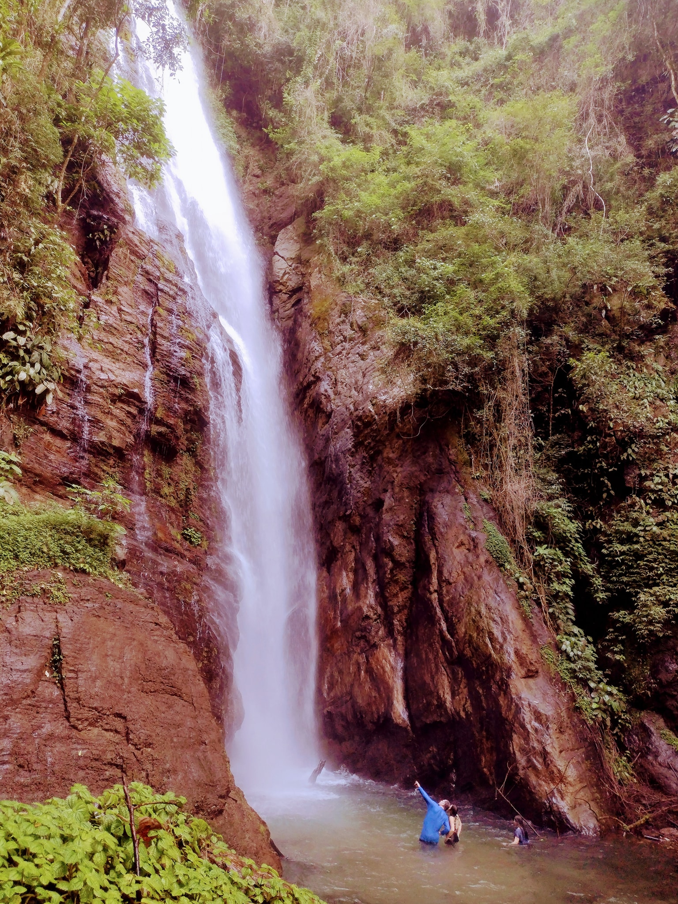

Detalhes do Roteiro
A Caverna do Diabo, também conhecida como Gruta da Tapagem, é uma das cavernas mais populares do Brasil. Seu apelido intrigante capturou a imaginação de todos, e a fama que a envolve é totalmente merecida. Localizada no estado de São Paulo, essa magnífica caverna é uma das maiores do país, com proporções gigantescas que deixam os visitantes maravilhados.
Com seis roteiros turísticos diferentes, você terá a oportunidade de atravessar de uma boca a outra, uma experiência verdadeiramente emocionante.
Esta caverna não é apenas um espetáculo visual, mas também uma das mais antigas cavernas de calcário, comprovação científica de sua importância histórica e geológica.
Prepare-se para se maravilhar com suas formações rochosas impressionantes, estalactites e estalagmites que parecem esculpidas à mão pela natureza ao longo de milênios.
O Vale das Ostras é formado pelo Ribeirão das Ostras, o mesmo que atravessa a Caverna do Diabo. Esse rio forma 12 cachoeiras de diversas formas e tamanhos. A Trilha do Vale das Ostras, com aproximadamente 6,5 km de extensão e nível de dificuldade médio, passa por cachoeiras como do Engano, do Vômito, dá Meia-Volta, da Escondida, do Salto Triplo, do Funil, do Palmito, do Papo, além dos Poços Verde e Azul, chegando à imponente Queda do Meu Deus, com 53 metros de altura. Esta última foi eleita em 2011 a cachoeira mais bonita do Estado de São Paulo.
Translado privativo in/out saindo de Morretes e Curitiba;
Condutores e guias para todas as atividades realizadas dentro e fora do parque;
Equipamentos de segurança como capacete e lanterna de cabeça;
Seguro atividade (cobertura para acidentes pessoais e despesas hospitalares);
Ingresso Vale das Ostras e Cachoeira do Meu Deus;
Fotos e vídeos da sua experiência;
Despesa extras que não estejam descritas nesse roteiro.
O visitante deve estar usando calçado adequado, calça e camiseta com manga normal que proteja os ombros;
Usar: roupas que possam molhar – dê preferência para calças de tactel ou legging, pois secam rápido;
Levar: Roupas extras para se trocar no final da atividade, protetor solar, repelente, óculos de sol, mochila pequena para guardar seu lanche e pertences na caminhada.
Levar tênis ou bota confortável para caminhada;
Nível de Dificuldade: Leve à moderada.
Obs. Temos opções de pacotes completos, incluindo hospedagem e alimentação.
Tarifas
| N° de pessoas | Guia bilíngue | Adulto | Criança |
|---|---|---|---|
| 2 a 6 | Não | R$ 1.200.00 | R$ 950.00 |
| 2 a 10 | Sim | R$ 1.300.00 | R$ 1.050.00 |
Galeria de Fotos




